Lab 2: Multiplexed 7-Segment Display
Hours Taken: 18 hours
1 Introduction
In this lab, a multiplexed two-digit seven-segment display and a four-row keypad scanning circuit were implemented on the FPGA. The design builds on the counter and seven_segment_decoder modules developed in Lab 1 and demonstrates how existing modules can be reused to construct a larger system. A single seven-segment decoder was time multiplexed between two hexadecimal inputs, while a separate counter-based scanning circuit sequentially activated the four keypad rows. The keypad column inputs were also inverted(since a column output was low-active while the LED output was high-active) and displayed on LEDs to provide a visual indication of the signals detected by the FPGA.
The design uses the FPGA’s high-speed oscillator (HSOSC) as the system clock. Parameterized instances of Lab 1 counter were used for both the display multiplexing and keypad scanning circuits. The design was simulated in QuestaSim using automatic testbenches for both the scanning module and time multiplex display and their corresponding top-level module before being tested on the physical FPGA hardware.
2 Design and Testing Methodology
The lab was approached as two separate hardware builds. The first build focused on multiplexing the seven-segment displays, while the second focused on scanning the keypad and displaying its column signals on LEDs. For both builds, the FPGA’s high-speed oscillator (HSOSC) was used as the clock source, and the counter from Lab 1 was reused rather than implementing counters directly inside the new modules.
2.1 Build 1: Multiplexed Seven-Segment display
The first build implemented a two-digit hexadecimal display using only a single instance of lab1_seven_segment decoder. A parameterized counter was used to periodically switch between the two hexadecimal inputs. The resulting digit_select signal controls which display is active and determines which hexadecimal value is passed to the decoder. The display is therefore time multiplexed. Only one digit is driven at a time, but the switching occurs rapidly enough that both digits appear continuously illuminated to the observer. The counter parameters were selected to produce the required multiplexing frequency on the physical FPGA.
Click to expand Calculations for the sufficently quick multiplexing frequency
Since the FPGA clck operates at a frequency of \(48~\text{MHz}\), the corresponding clock period is: \[ T_{clk} = \frac{1}{f_{clk}} = \frac{1}{48\times10^6} \approx 20.83~\text{ns}. \] The seven-segment display was multiplexed at a frequency of \(1~\text{kHz}\). Therefore, the multiplexing period is
\[ T_{mux} = \frac{1}{f_{mux}} = \frac{1}{1000} = 1~\text{ms}. \]
The number of FPGA clock cycles required for one complete multiplexing period is
\[ N_{mux} = \frac{f_{clk}}{f_{mux}} = \frac{48\times10^6}{1000} = 48{,}000~\text{cycles}. \] Since the two displays are alternated during each multiplexing period, each display is active for half of the period:
$$ T_{digit} = = = 0.5~.
This corresponds to half of the multiplexing counter’s total count:
\[ N_{half} = \frac{N_{mux}}{2} = \frac{48{,}000~\text{cycles}}{2} = 24{,}000~\text{cycles}. \]
Thus, each display has a \(50\%\) duty cycle and is refreshed at \(1~\text{kHz}\). Which should be faster than the human eye can see and still have enough time for the physical system to change without bleeding or flickering to meet the specs.
For simulation, the counter parameters were reduced so that the display could switch between two digits within a short simulation. The testbench verified that each hexadecimal input was sent to the decoder when its corresponding display was selected and that reset returned the multiplexing circuit to its initial state.
The seven-segment display was driven using PNP transistors as a source switch. Each FPGA control output was connected through a \(1~\text{k}\Omega\) resistor to the base of a PNP transistor. The emitter of the transistor was connected to the \(3.3~\text{V}\) supply, while the collector supplied the common-anode connection of the display. The individual LED segments were then connected through a current-limiting resistor back to an FPGA GPIO output.
The \(1~\text{k}\Omega\) base resistor was selected to provide sufficient base current to drive the PNP transistor into saturation while limiting the current drawn from the FPGA GPIO.
Click to expand Calculations for the current limiting resistors for both the Base and LED display
The base current was calculated from the voltage across the base-emitter junction:
\[ I_B = \frac{V_{CC}-V_{OL(max)}-V_{BE(sat)}}{R_B}=\frac{3.3V-0.4V-0.75V}{2.15 mA}=1k\Omega \]
where \(V_{CC}=3.3~\text{V}\), \(R_B=1~\text{k}\Omega\), \(V_{OL(max)}=0.4V\), and \(V_{BE(sat)}=0.75V\) was taken from the GPIO datasheet Figure 1 and transistor datasheet Figure 2 The calculated base respectively. The FPGA’s \(V_{OL,\max}\) value was used rather than \(V_{OL,\min}\). Since the PNP transistor turns on when the FPGA output pulls the base low, the highest possible low-level output voltage produces the smallest voltage across the base resistor and therefore the smallest base current. Using \(V_{OL,\max}\) provides a worst-case check that there is still sufficient base current to saturate the transistor under all guaranteed FPGA output conditions.
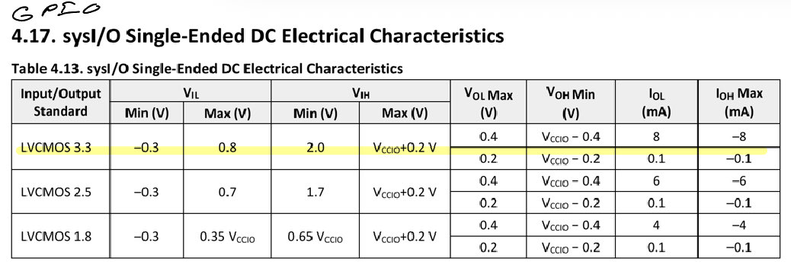
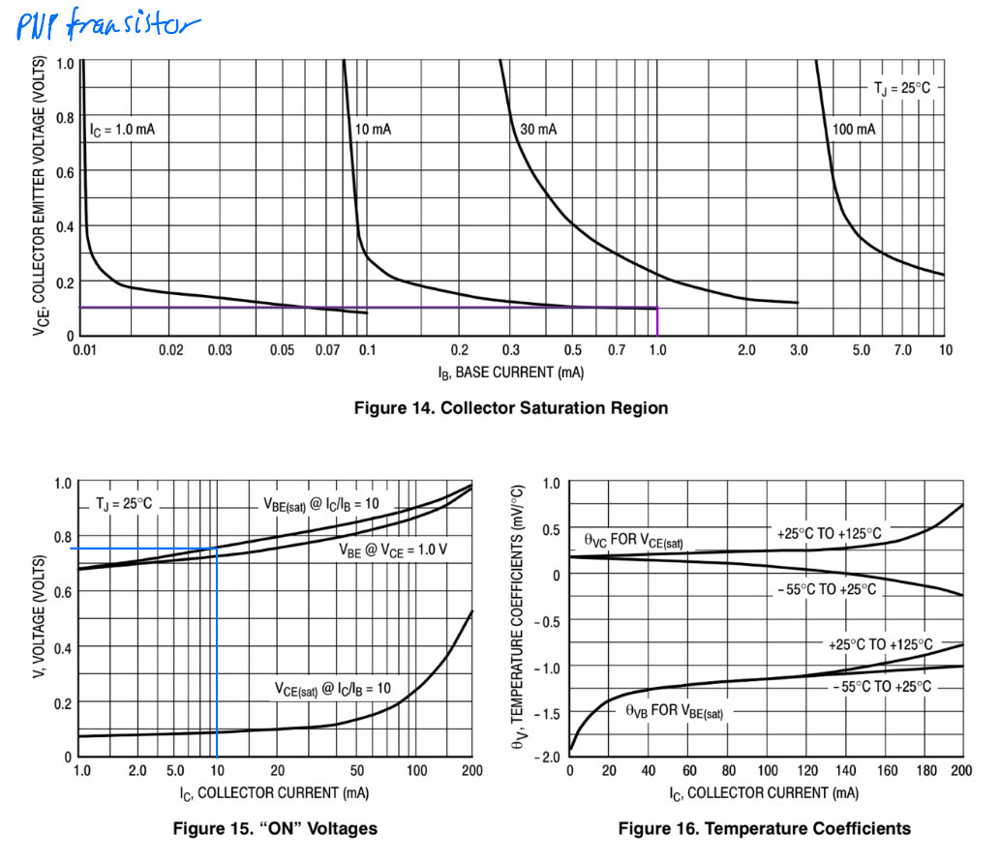
Current was then compared with the required collector current to verify that the transistor would remain saturated. A target collector current of approximately \(14~\text{mA}\) was selected for the LED segments to provide sufficient brightness while remaining within the display’s recommended operating range. The required LED current-limiting resistor was calculated using the transistor saturation voltage and the LED forward voltage:
\[ R_{LED} = \frac{V_{CC}-V_{CE(sat)}-V_F}{I_C}. =\frac {3.3V-0.1V-1.8V}{14 mA}=100 \Omega \]
The LED forward voltage, \(V_F\), was obtained from the seven-segment display datasheet using the forward-current versus forward-voltage characteristic graph seen in Figure 3 at approximately \(14~\text{mA}\). Using the resulting forward voltage and the target collector current gave a required resistance of approximately \(100~\Omega\). The selected \(100~\Omega\) resistor therefore limits the LED current to approximately the desired operating current.
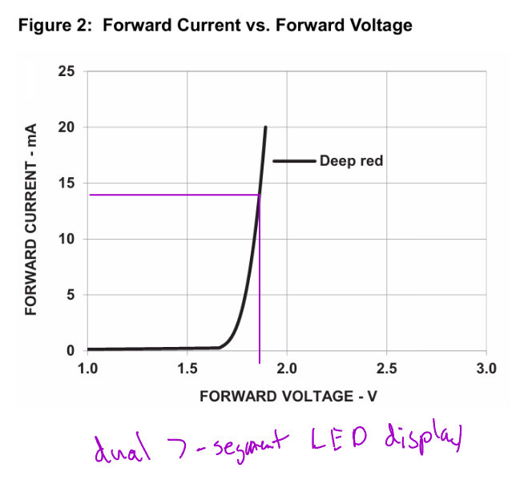
Finally, the PNP transistor was checked for saturation using a conservative forced current gain of 10. The resulting ratio was calculated as
\[ \frac{I_C}{I_B}<10 \rightarrow \frac{14 mA}{2.15 mA}=6.51 mA < 10 mA \]
Since the calculated collector-to-base current ratio was below 10, the available base current was sufficient to drive the transistor into saturation at the desired LED current. This ensured that the transistor operated as an effective high-side switch while keeping the FPGA output current within its required limits.2.2 Build 2: Keypad scanning
The second build implemented the keypad scanning circuit separately from the seven-segment display. A parameterized instance of Lab 1’s counter generates the scanning timing
Click to expand Calculations for the Rate of Toggling the Active row
if the rows are:
\[ 1000 \rightarrow 0100 \rightarrow 0010 \rightarrow 0001 \rightarrow 1000 \]
The keypad scanning circuit cycles through the four row outputs at a rate of \(2~\text{Hz}\). Therefore, the full scanning period is
\[ T_{\text{scan}}=\frac{1}{2~\text{Hz}}=0.5~\text{s}. \]
With a \(48~\text{MHz}\) FPGA clock, this requires
\[ N_{\text{scan}}=(48\times10^6)(0.5) =24{,}000{,}000~\text{cycles}. \]
Since the four rows are active sequentially, each row is active for
\[ N_{\text{row}}=\frac{24{,}000{,}000}{4} =6{,}000{,}000~\text{cycles}. \]
The counter was therefore parameterized with a maximum count of \(23{,}999{,}999\), with row transitions occurring at \(5{,}999{,}999\), \(11{,}999{,}999\), and \(17{,}999{,}999\) cycles.
Assignment statements convert the counter output into four one-hot keypad row signals \[ 1000 \rightarrow 0100 \rightarrow 0010 \rightarrow 0001 \rightarrow 1000 \] Each row is activated sequentially as the counter progresses through its predefined ranges. The scanning module also supports both reset and enable functionality. The four column inputs are connected to the LEDs through an inverter, since the columns are LOW-Active and the LEDs are high-active, thus allowing the column activity to be directly observed in the LEDs.
The keypad rows were implemented using \(2N3904\) NPN transistors as open-collector outputs. When a row is selected every 2 Hz, the FPGA GPIO drives the transistor’s base HIGH, causing the transistor to pull the keypad row to ground and holding the column LOW. A \(10~\text{k}\Omega\) pull-up resistor on each column holds the column HIGH when no key is pressed.
The base resistor was selected to limit the current supplied by the FPGA GPIO. Using the minimum guaranteed FPGA HIGH output voltage gives the worst-case base current to ensure that it is saturated at all times.
Click to expand Calculations for current limiting resistors
To find the base current coming from the GPIO to the NPN transistor, we can use the following equation: \[ I_B=\frac{V_{OH,\min}-V_{BE(sat)}}{R_B} \approx 2.25~\text{mA}. \]
Where \(V_{OH,\min}=3.3V-0.4V\) as seen in Figure 1 and that is about \(V_{BE(sat)}=0.65\) for a \(I_c=0.31mA\) as seen in Figure 5. We also see that the maximum current being drawn at the output is \(2.25 mA\) which is well within the 8 mA max, as seen in Figure 1. The maximum collector current is limited by the \(10~\text{k}\Omega\) column pull-up resistor:
\[ I_C=\frac{V_{CC}-V_{CE(sat)}}{10~\text{k}\Omega} \approx 0.32~\text{mA}. \]
Where \(V_{CC}=3.3 V\),\(V_{CE(sat)}=0.1 V\) as seen in. The transistor was checked for saturation using a conservative forced current gain of 10:
\[ \frac{I_C}{I_B} =\frac{0.32~\text{mA}}{2.25~\text{mA}} \approx0.142<10. \]
Thus, the available base current is more than sufficient to saturate the transistor. With the transistor saturated, the row voltage is approximately \(V_{CE(sat)}=0.1~\text{V}\) as seen in Figure 5. This is below the FPGA’s maximum guaranteed LOW input voltage, \(V_{IL,\max}=0.8~\text{V}\) as seen in Figure 1, so the FPGA reliably recognizes the pressed-key state as LOW.
When no key is pressed, the \(10~\text{k}\Omega\) pull-up resistor brings the column to approximately \(3.3~\text{V}\). This is above the FPGA’s minimum guaranteed HIGH input voltage, \(V_{IH,\min}=2.0V\), ensuring that the column is reliably read as HIGH when inactive. The pull-up resistor also limits the current when the NPN transistor pulls the column LOW, making the open-collector configuration tolerant of multiple simultaneous key presses.
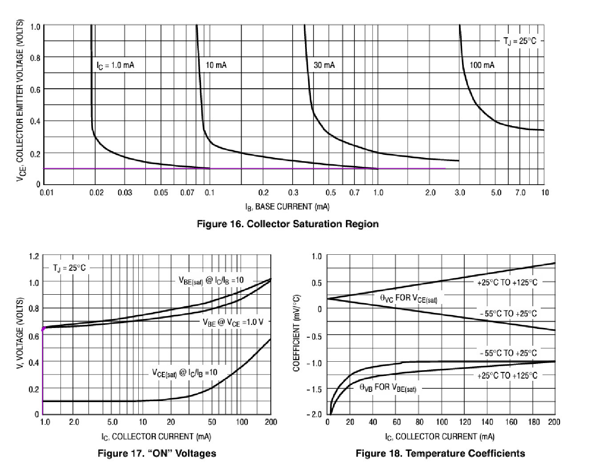
A similar calculation was performed for the single LED indicator that wasn’t already on the board. The LED was connected to the \(3.3~\text{V}\) supply through a \(10~\text{k}\Omega\) resistor, with a \(2N3904\) NPN transistor used as a way to connect it to ground. The transistor base was controlled by an FPGA GPIO through a \(1~\text{k}\Omega\) resistor. The base current was calculated using the minimum guaranteed GPIO HIGH voltage and \(V_{BE(sat)}\) to verify sufficient drive current. The collector current was then determined from the \(10~\text{k}\Omega\) LED resistor and the LED forward voltage. Finally, the ratio \(I_C/I_B\) was checked to ensure it remained below the forced gain of 10, confirming that the transistor would operate in saturation while limiting the LED current.
Click to expand Calculations for current limiting resistors for the one LED
To find the base current coming from the GPIO to the NPN transistor, we can use the following equation: \[ I_B=\frac{V_{OH,\min}-V_{BE(sat)}}{R_B} \approx 2.25~\text{mA}. \]
Where \(V_{OH,\min}=3.3V-0.4V\) as seen in Figure 1 and that is about \(V_{BE(sat)}=0.75\) for a \(I_c=10mA\) as seen in Figure 5. We also see that the maximum current being drawn at the output is \(2.25 mA\), which is well within the \(8 mA\) max as seen in Figure 1. Now, we want to find the current of the collector to ensure that the transistor is still saturated.
\[ I_C=\frac{V_{CC}-V_{CE(sat)}-V_{F(LED)}}{120\Omega} \approx 10~\text{mA}. \]
Where \(V_{CC}=3.3 V\),\(V_{CE(sat)}=0.1 V\), and \(V_{F(LED)}=2.06\) as seen in @led-2. The transistor was checked for saturation using a conservative forced current gain of 10:
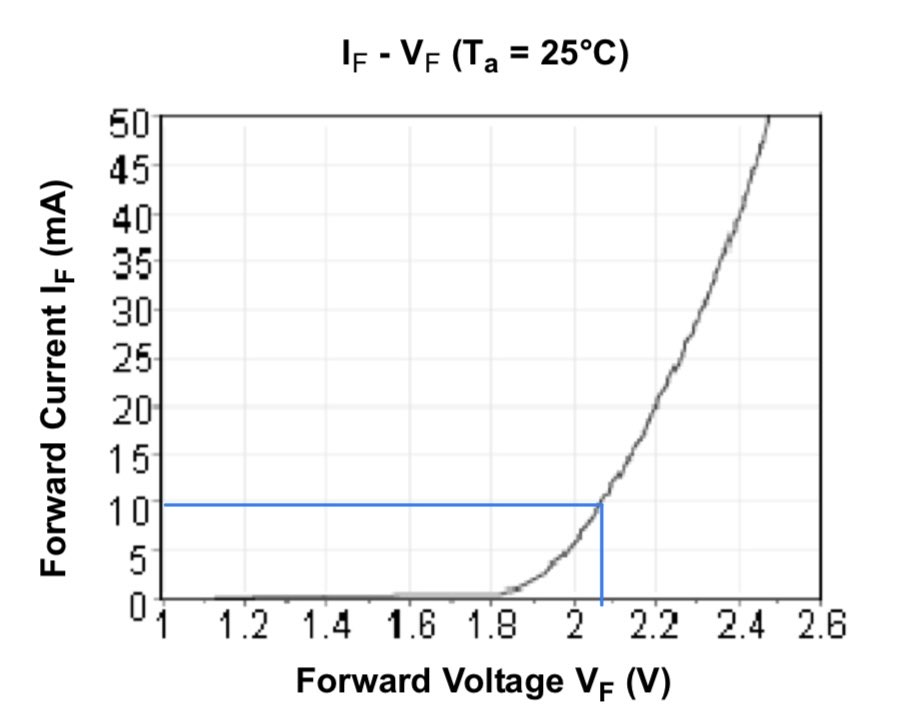
\[ \frac{I_C}{I_B} =\frac{0.32~\text{mA}}{2.25~\text{mA}} \approx0.142<10. \]
Thus, the available base current is more than sufficient to saturate the transistor. With the transistor saturated, the row voltage is approximately \(V_{CE(sat)}=0.1~\text{V}\) as seen in Figure 5. This is below the FPGA’s maximum guaranteed LOW input voltage, \(V_{IL,\max}=0.8~\text{V}\) as seen in Figure 1, so the FPGA reliably recognizes the pressed-key state as LOW.
When no key is pressed, the \(10~\text{k}\Omega\) pull-up resistor brings the column to approximately \(3.3~\text{V}\). This is above the FPGA’s minimum guaranteed HIGH input voltage, \(V_{IH,\min}=2.0V\), ensuring that the column is reliably read as HIGH when inactive. The pull-up resistor also limits the current when the NPN transistor pulls the column LOW, making the open-collector configuration tolerant of multiple simultaneous key presses.
For simulation, the scanning counter parameters were also reduced so that each row remained active for only a few clock cycles. This allowed the complete scanning sequence to be tested quickly while the physical hardware retained the parameters required for the intended scanning rate. ## Simulation Testing
Separate automatic testbenches were used to verify the two builds. The scanning testbench demonstrated all four row outputs, transitions between rows, counter wraparound, reset, and enable behavior. The top-level keypad testbench additionally verified that the column inputs were correctly represented on the LEDs.
The seven-segment build was tested separately to verify the multiplexing behavior and correct display of the two hexadecimal inputs. No separate simulations of the Lab 1 counter or seven-segment decoder were performed because those modules had already been verified in the previous lab.
3 Technical Documentation
The source code for both Lab 2 builds can be found in the associated GitHub repository
Build 1: Dual 7 segment display
3.1 Build 1: Seven-Segment Display Block Diagram
The first build uses the HSOSC as the clock source, which drives the parameterized multiplexing counter. The counter generates the digit_select signal used to select between the two hexadecimal inputs. The selected value is then passed to the single lab1_seven_segment decoder, whose output drives the segment lines. Assignment statements control which of the two display anodes are activated.
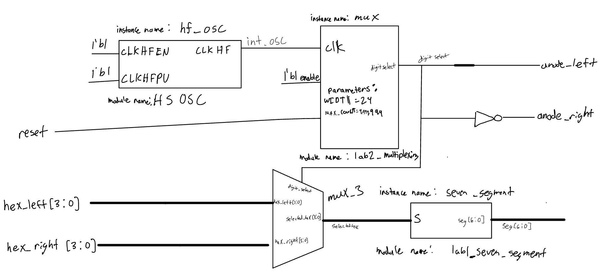
3.2 Build 2: Keypad Scanner Block Diagram
The second build uses the HSOSC to drive the parameterized scanning counter. The counter output is converted into the four keypad row signals using assignment statements. The keypad column inputs (LOW active) are inverted and connected to the LEDs (HIGH active) so that column activity can be observed during operation.

3.3 Build 1: Seven-Segment Display Schematics
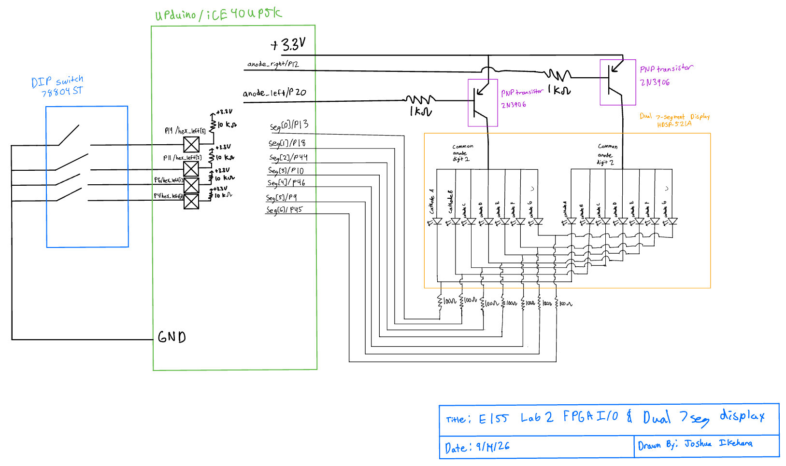
The Figure 8 schematic shows the FPGA connections to the two seven-segment displays and the associated current-limiting resistors. Component values, part numbers, FPGA pin numbers, and signal names are labeled according to the schematic requirements.
3.4 Build 2: Keypad Scanner Display Schematics
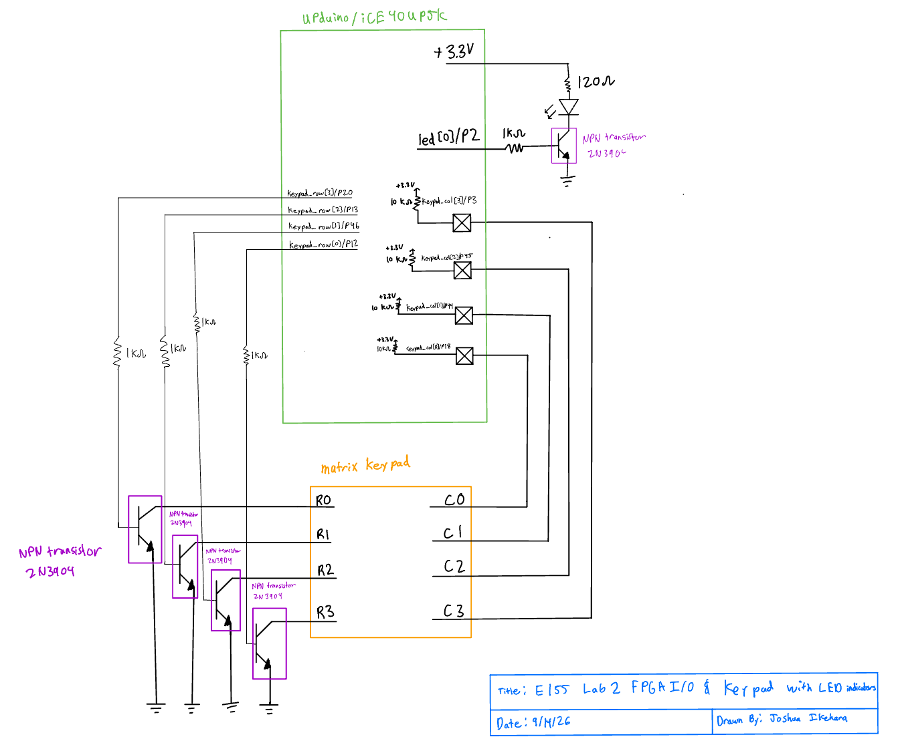
The Figure 9 schematic shows the FPGA connections to the four keypad rows, four keypad columns, and LEDs. Series resistors were used where required to limit FPGA output current.
4 Results and Discussion
4.1 Build 1: Seven-Segment Display
The seven-segment multiplexing design met the intended functional requirements. The lab2_multiplexing_tb testbench verified that the digit select signal correctly switches between the two displays, that the counter wraps around as expected, and that reset returns the multiplexing circuit to the correct initial state. The lab2_top_tb testbench further verified the complete top-level functionality, including the correct anode selection and seven-segment patterns for the hexadecimal values displayed on each digit. The testbench confirmed that the displayed values can be changed and that the circuit correctly responds to reset.
4.2 Testbench Simulation
The multiplexing counter was parameterized with smaller values for simulation so that the display transitions could be observed without waiting for the full hardware counter period. The module-level testbench used a counter range of 0-7, with the display selection changing at a count of 4. The top-level testbench used the same reduced parameters while retaining the normal HSOSC clock source. The simulations demonstrated the expected alternating selection of the left and right displays and the corresponding segment patterns.
The testbenches successfully verified the major functional behaviors of the seven-segment design, including multiplexing, counter wraparound, reset behavior, and hexadecimal display decoding. No functional issues were identified during simulation.
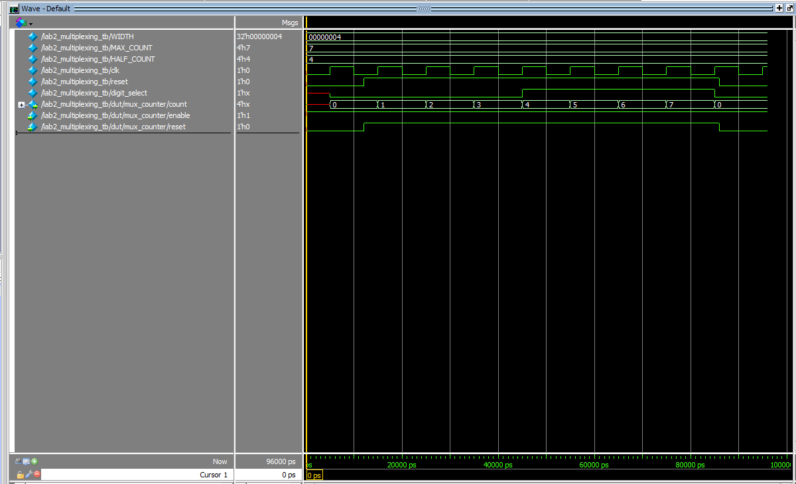
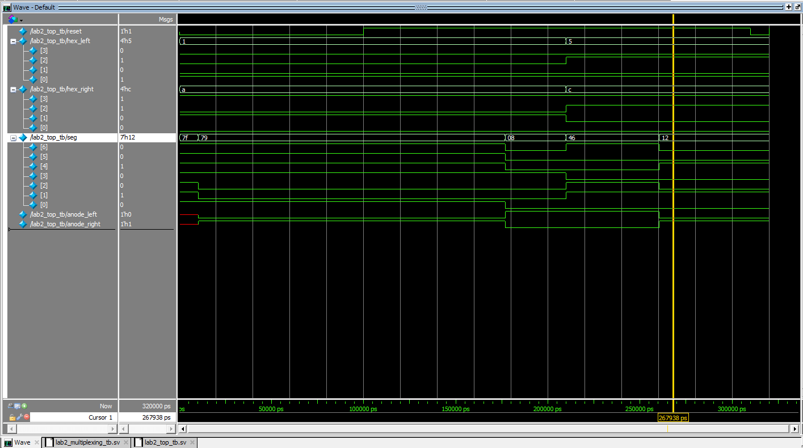
4.3 Build 2: Keypad Scanner
The keypad scanning design met the intended functional requirements. The lab2_scanning_tb testbench verified that the scanning circuit sequentially activates each row in the expected 1000, 0100, 0010, and 0001 pattern. It also verified counter wraparound, reset behavior, and the enable input. When enable was deasserted, the active row remained unchanged, and scanning resumed correctly when enable was asserted again.
The lab2_top_tb testbench verified the complete keypad interface, including the row scanning outputs and LED passthrough from the keypad columns. Multiple column input patterns were tested to confirm that the LED outputs were the inverse of the column inputs. The top-level reset behavior and complete four-row scanning sequence were also verified.
4.4 Testbench Simulation
Both testbenches used reduced counter parameters to allow the scanning sequence to be observed quickly in QuestaSim. The scanning module testbench demonstrated all four row transitions, counter wraparound, enable behavior, and reset. The top-level testbench additionally verified the LED output for several column input combinations while the keypad scanning circuit was operating.
The simulations demonstrated that the keypad scanning and LED passthrough logic operated as intended. All tested row transitions and output conditions produced the expected results, and no functional issue were identified during simulation.
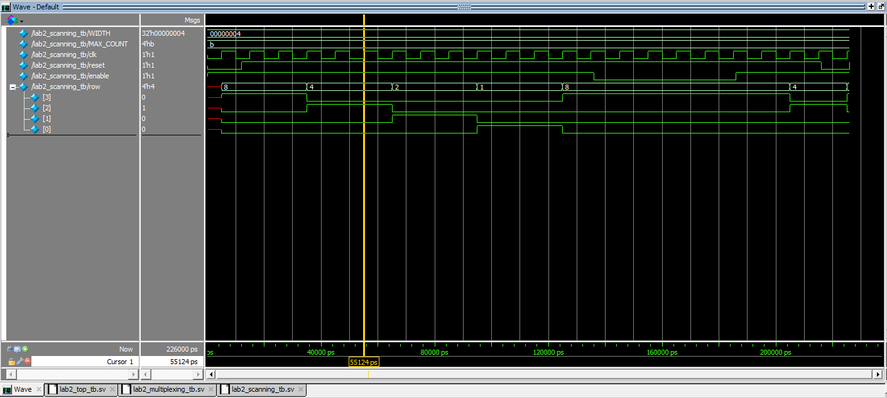
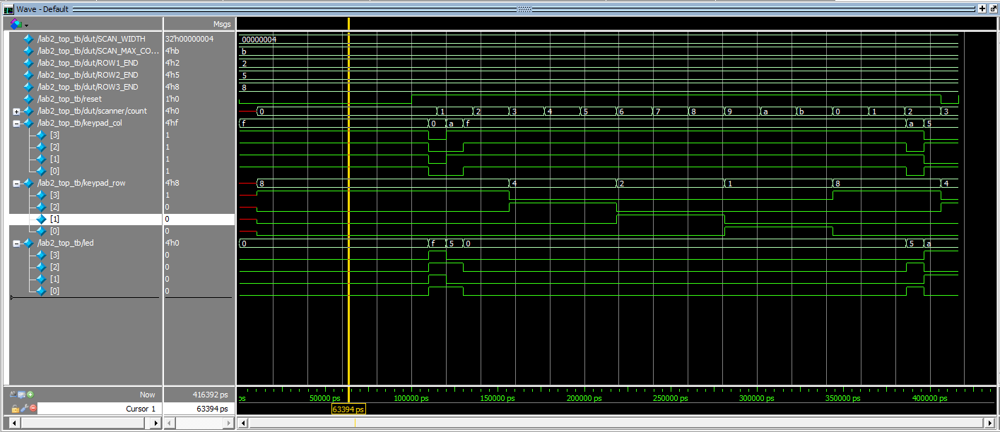
5 Conclusion
Two separate FPGA builds were successfully developed for Lab 2. The first build implemented a time-multiplexed two-digit seven-segment display using a single reused seven-segment decoder and a parameterized counter. The second build implemented a four-row keypad scanner using another parameterized counter, with the keypad column signals displayed on LEDs.
Both designs reused the verified Lab 1 counter rather than implementing counters inline. Automatic QuestaSim testbenches were used to verify the required functionality, including multiplexing, keypad row transitions, reset, enable, wraparound, and LED driving.
The designs met the Lab 2 requirements. There does seem to be a slight issue when multiple buttons are pushed in the same row and then a button is pushed in the row below it in the same column as one of them, that makes them all blink as if they were pushed down in both rows.
I spent approximately 18 hours on this lab.
6 AI Prototype Summary
Click to expand to see the AI-generated code for the 2 Hz blink
module time_mux_7seg (
input logic clk,
input logic rst_n,
input logic [3:0] in0, // First 4-bit binary input
input logic [3:0] in1, // Second 4-bit binary input
output logic [6:0] seg0, // First 7-segment display output [g,f,e,d,c,b,a]
output logic [6:0] seg1 // Second 7-segment display output [g,f,e,d,c,b,a]
);
logic sel;
logic [3:0] mux_in;
logic [6:0] decoded_seg;
// Toggle select signal every clock cycle to alternate inputs
always_ff @(posedge clk or negedge rst_n) begin
if (!rst_n)
sel <= 1'b0;
else
sel <= ~sel;
end
// Input Multiplexer: selects between in0 and in1
always_comb begin
mux_in = sel ? in1 : in0;
end
// Shared 4-to-7 Common Anode Decoder (0 = Segment ON, 1 = Segment OFF)
// Bus mapping: {g, f, e, d, c, b, a}
always_comb begin
case (mux_in)
4'h0: decoded_seg = 7'b100_0000;
4'h1: decoded_seg = 7'b111_1001;
4'h2: decoded_seg = 7'b010_0100;
4'h3: decoded_seg = 7'b011_0000;
4'h4: decoded_seg = 7'b001_1001;
4'h5: decoded_seg = 7'b001_0010;
4'h6: decoded_seg = 7'b000_0010;
4'h7: decoded_seg = 7'b111_1000;
4'h8: decoded_seg = 7'b000_0000;
4'h9: decoded_seg = 7'b001_0000;
4'hA: decoded_seg = 7'b000_1000;
4'hB: decoded_seg = 7'b000_0011;
4'hC: decoded_seg = 7'b100_0110;
4'hD: decoded_seg = 7'b010_0001;
4'hE: decoded_seg = 7'b000_0110;
4'hF: decoded_seg = 7'b000_1110;
default: decoded_seg = 7'b111_1111; // All OFF
endcase
end
// Output Demultiplexer / Registers: latches decoded value to corresponding output bus
always_ff @(posedge clk or negedge rst_n) begin
if (!rst_n) begin
seg0 <= 7'b111_1111;
seg1 <= 7'b111_1111;
end else begin
if (sel == 1'b0)
seg0 <= decoded_seg;
else
seg1 <= decoded_seg;
end
end
endmoduleThe result after putting in my code and prompting it with the second question
module dual_seg_time_mux (
input logic reset,
input logic [3:0] hex_left,
input logic [3:0] hex_right,
output logic [6:0] seg_left,
output logic [6:0] seg_right
);
logic int_osc;
logic digit_select;
logic [3:0] selected_hex;
logic [6:0] decoded_seg;
// Internal high-speed oscillator instance
HSOSC #(
.CLKHF_DIV(2'b00)
) hf_osc (
.CLKHFPU(1'b1),
.CLKHFEN(1'b1),
.CLKHF(int_osc)
);
// Multiplexing counter controller[cite: 2]
lab2_multiplexing mux_ctrl (
.clk(int_osc),
.reset(reset),
.digit_select(digit_select)
);
// Input MUX: alternates between hex_left and hex_right[cite: 1]
assign selected_hex = digit_select ? hex_right : hex_left;
// Single common-anode seven-segment decoder instance[cite: 1, 3]
lab1_seven_segment decoder (
.s(selected_hex),
.seg(decoded_seg)
);
// Demultiplexer registers: latches decoded value to corresponding 7-bit output bus
always_ff @(posedge int_osc) begin
if (~reset) begin
seg_left <= 7'b111_1111; // Active-low off state[cite: 3]
seg_right <= 7'b111_1111; // Active-low off state[cite: 3]
end else if (digit_select) begin
seg_right <= decoded_seg;
end else begin
seg_left <= decoded_seg;
end
end
endmoduleFor this prototype, I used an LLM to generate SystemVerilog for a time-multiplexed two-digit seven-segment display. I first gave the LLM the prompt without any additional context. The resulting code was functional in concept, but it implemented the seven-segment decoder and multiplexing logic entirely within a single module. I think that the general idea to solve the problem was essentially the same. The only thing was it wasn’t created in a modular way, which would prevent the use of these modules in future applications, which is a limitation. However, I think it worked basically identical to my implementation. It did, however, make it so that the output would toggle between each anode every clock cycle, which would be way too quick and cause bleeding.
I then repeated the experiment using my Lab 1 files as context. The difference was significant because the LLM was able to use the existing lab1_seven_segment decoder, lab2_multiplexing module, and HSOSC oscillator rather than recreating these components. The generated code created these existing modules and connected them together using an input multiplexer. This made the second design more consistent with the structure of my Lab 2 project and reduced the amount of new logic that needed to be written.
The context-aware response was more useful because it reused my existing modules and oscillator, while the context-free response created its own clock and decoder logic. However, the context-aware response still added unnecessary sequential registers (don’t need a right and left seg, just need a seg as the multiplexer takes care of which one to choose), so reviewing and modifying the generated code would still need to be done. This showed me that providing context improves LLM-generated Verilog, but the code still needs to be checked for correctness and efficiency.